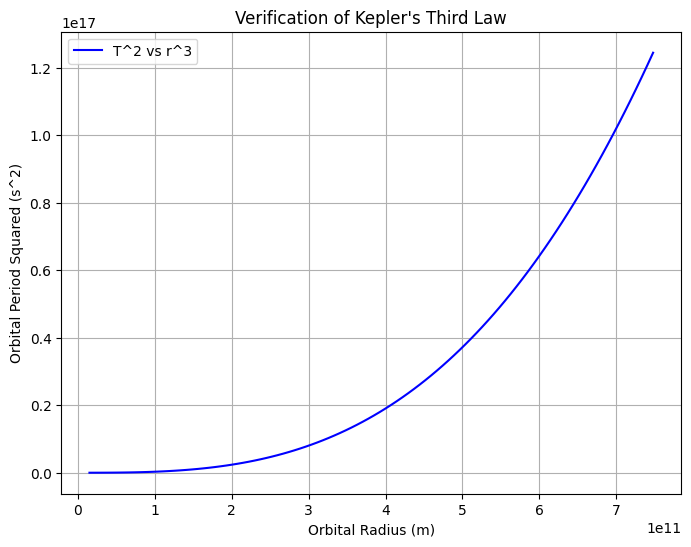

Problem 1
Orbital Period and Orbital Radius
Motivation
Kepler's Third Law states that the square of the orbital period (ΔT) of a planet is proportional to the cube of its orbital radius (Δr). This fundamental relationship is crucial in celestial mechanics and allows astronomers to determine planetary motions and gravitational influences in various astrophysical contexts.
Theoretical Foundation
Derivation of Kepler's Third Law for Circular Orbits
For an object in a circular orbit around a much more massive central body, the gravitational force provides the necessary centripetal force:
Using Newton's Law of Gravitation:
where: - \( G \) is the gravitational constant, - \( M \) is the mass of the central body, - \( m \) is the mass of the orbiting body, - \( r \) is the orbital radius, - \( v \) is the orbital velocity.
Rearranging for velocity:
Since orbital period \( T \) is given by:
Substituting \( v \) from the previous equation:
Squaring both sides:
This is Kepler's Third Law, which states that the square of the orbital period is proportional to the cube of the orbital radius.
Implications in Astronomy
- Allows estimation of planetary masses and distances.
- Used to determine the mass of celestial bodies like the Sun by analyzing planetary orbits.
- Helps in designing satellite orbits around planets.
Real-World Examples
- The Moon's orbit around Earth (~27.3 days, ~384,400 km radius).
- The Earth's orbit around the Sun (~365.25 days, ~1 AU radius).
- Jupiter's moons, which were used by Galileo to estimate planetary masses.
Computational Simulation
To validate Kepler's Third Law, we simulate a circular orbit numerically using Python. The simulation uses Newton's laws to model planetary motion under gravitational attraction.

import numpy as np
import matplotlib.pyplot as plt
from scipy.constants import G, pi
def orbital_period(radius, mass_central):
return 2 * pi * np.sqrt(radius**3 / (G * mass_central))
# Example: Earth around Sun
mass_sun = 1.989e30 # kg
radii = np.linspace(0.1, 5, 100) * 1.496e11 # AU to meters
periods = orbital_period(radii, mass_sun)
plt.figure(figsize=(8, 6))
plt.plot(radii, periods**2, label="T^2 vs r^3", color='blue')
plt.xlabel("Orbital Radius (m)")
plt.ylabel("Orbital Period Squared (s^2)")
plt.title("Verification of Kepler's Third Law")
plt.legend()
plt.grid()
plt.show()
Extension to Elliptical Orbits
For elliptical orbits, Kepler's Third Law still holds using the semi-major axis \( a \) instead of \( r \), meaning:
This applies to planets, comets, and satellites following elliptical trajectories.
Conclusion
Kepler’s Third Law provides a fundamental relationship between orbital periods and radii, making it a cornerstone of gravitational studies. Simulations verify the theoretical predictions and highlight their importance in astronomy, space exploration, and satellite engineering.